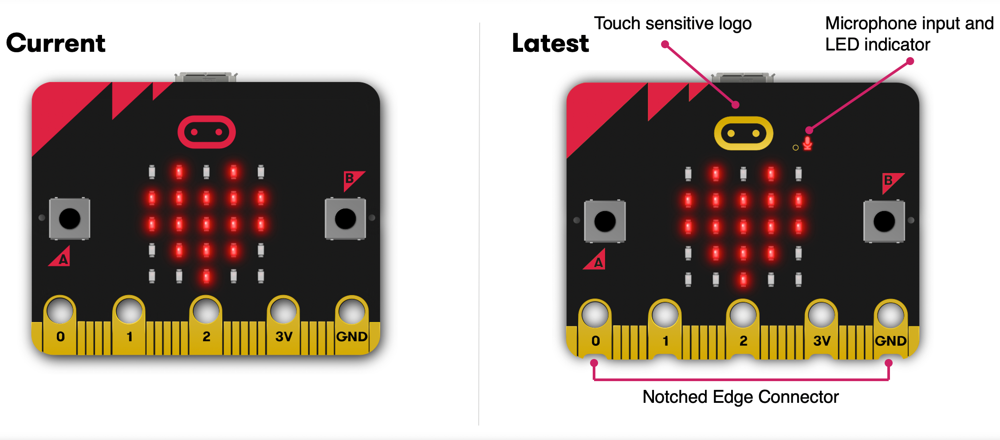

Micro:Bit
Quels outils pour enseigner avec ?
Bruno Bourgine
Professeurs de Mathématiques et Sciences Physiques en Lycée Professionnel
LP Mistral (Marseille 8e)
IREM : groupes enseignement de l’informatique et innovation et expérimentation en LP


processeur : 64 MHz Arm Cortex-M4 , 512 KB flash, 128 KB RAM
fonctionnalités incluses : température, BLE, capteur accélération, capteur magnétique.
extensions : très nombreuses (capteurs, robots)
code : exécuter à partir d’un fichier .HEX ou directement en microPython
Public : du collège aux lycées (général, technique, professionnel)
Disciplines : informatique, mathématiques, technologie, sciences-physiques, svt …

Pour les téméraires : Visual Studio (MS) + extension Device Simulator Express

Les navigateur Chromium (ou Chrome) et Opéra permettent le flashage direct de la carte (protocole WebUsb).
Certaines interfaces sont disponibles dans les deux configurations :
Choisir en toute confiance …
Pour : cycle 4, CAP, transition (2nde)
Remarque : on peut définir de vraies fonctions avec MakeCode, VittaScience ou EduBlock.
Avant de programmer : lire la doc officielle (in english), où bien cette fiche IREM (in french).
Son cousin, hors ligne : Mu

De nombreux atouts : libre, simple, convivial, complet (REPL, fichiers, traceur, console)
sur MakeCode, VittaScience, EduBlock
Semble idéal pour la transition …
… à condition d’en connaître les limites.
(Edublock, VittaScience)
Fonctionne très bien dans le sens BLOC -> PYTHON
Mais pas du tout dans l’autre : les modifications faites dans le script Python ne sera pas implémenté dans le code en blocs.
(MakeCode)
Un exemple de code classique:
from microbit import *
display.scroll("Hello")
while True:
if button_a.was_pressed():
display.show(Image.HAPPY)
Le même code avec MakeCode
def on_button_pressed_a():
basic.show_icon(IconNames.HAPPY)
input.on_button_pressed(Button.A, on_button_pressed_a)
basic.show_string("Hello")

Quelques solutions intéressantes
Vous reprendrez bien une petite fiche ?
Le mieux c’est encore d’essayer : microbit.org/join


Pour tester : https://fr.vittascience.com/classroom/login?link=gu67i
Quelques fiches ressources : github.com/iremlp/brochure-IREM—microbit